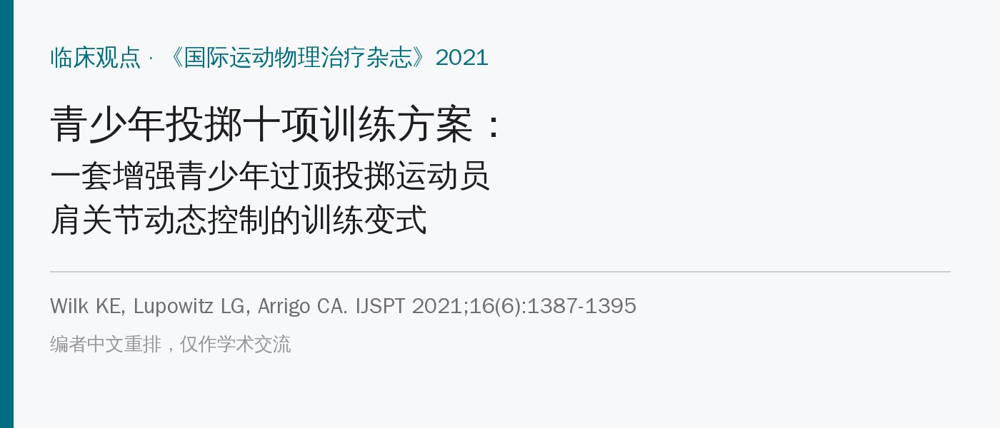
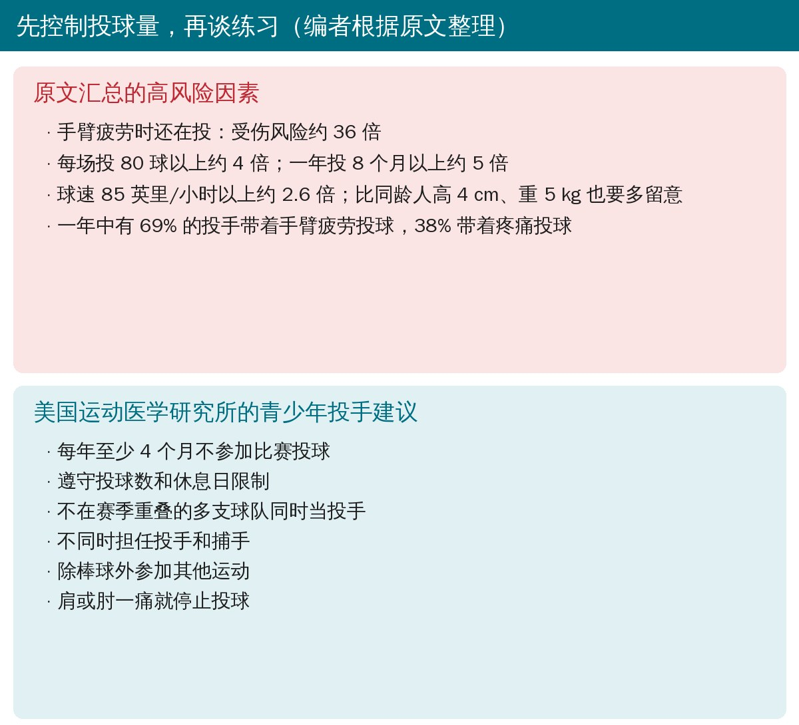
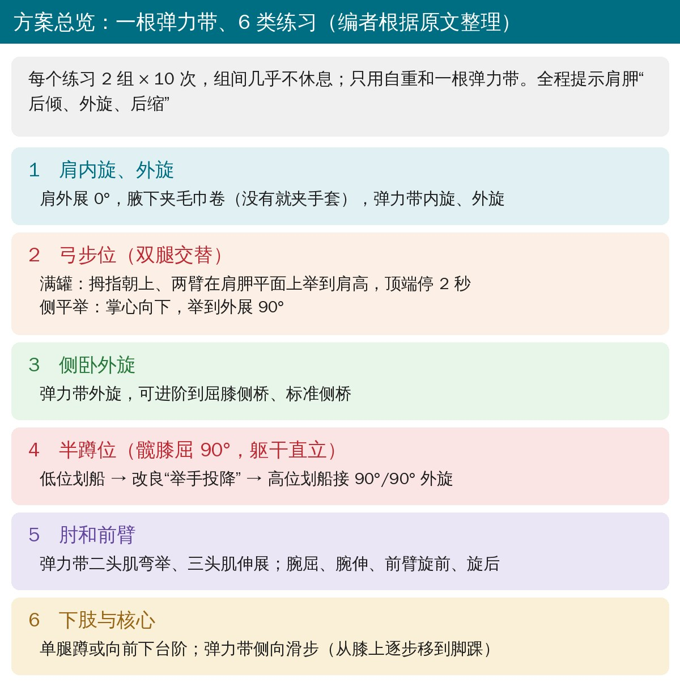
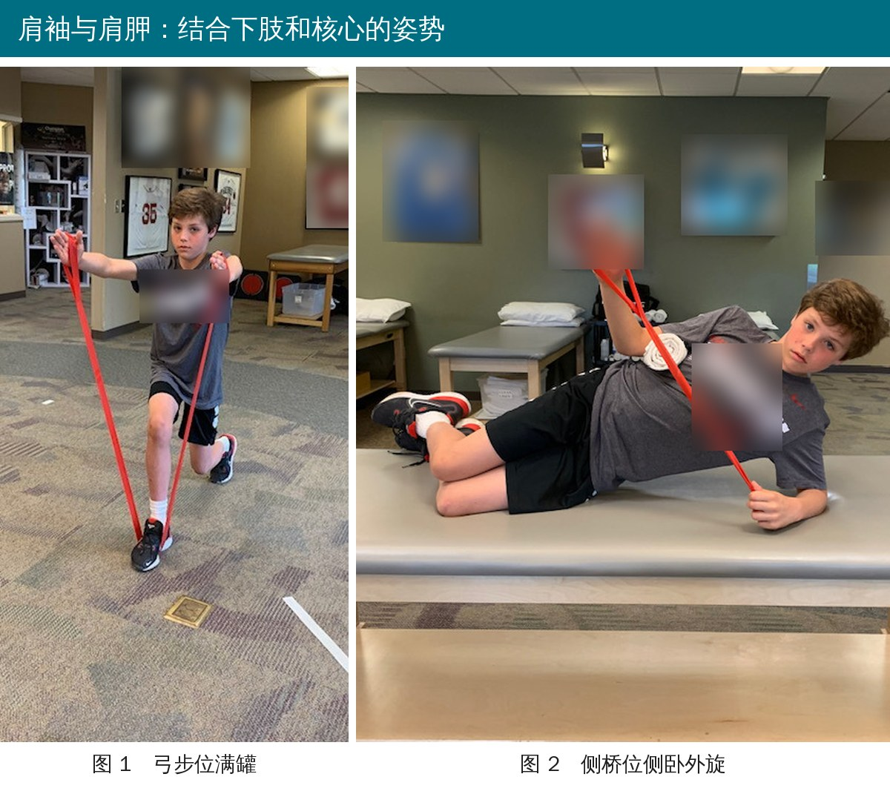
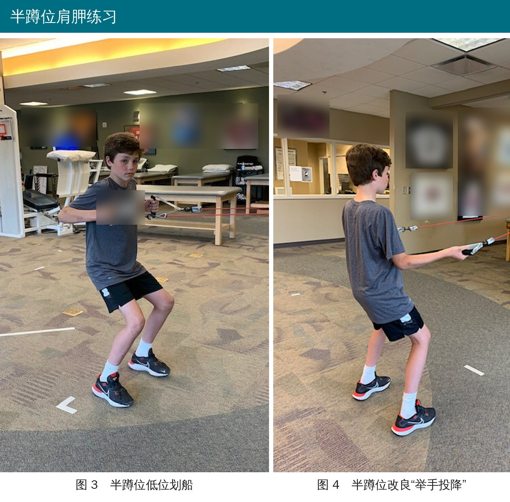
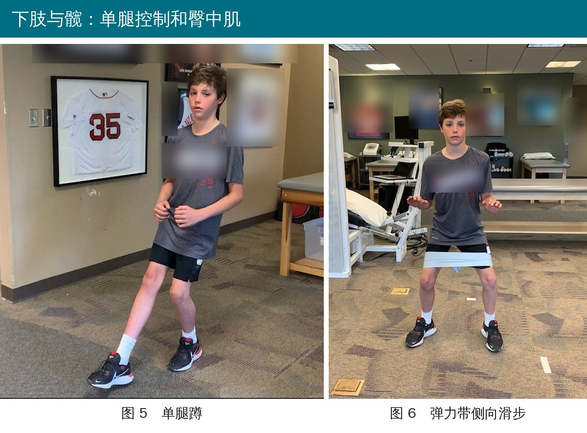

🔖原文信息（编者中文重排）
📚 文献信息
▪ Wilk KE, Lupowitz LG, Arrigo CA. The Youth Throwers Ten Exercise Program: a variation of an exercise series for enhanced dynamic shoulder control in the youth overhead throwing athlete. Int J Sports Phys Ther. 2021;16(6):1387-1395. doi:10.26603/001c.29923
▪ 作者 Kevin Wilk 是经典“投掷十项（Thrower’s Ten）”方案的提出者之一
▪ 临床观点文章（专家经验方案），不是对照研究
投球是人体最快的动作之一：成年投手肩内旋角速度可达每秒 7250 度，只用 0.03 秒。青少年棒球在美国每年约 300 万人参与，8～18 岁球员里多达 74% 投球时手臂痛，其中约四分之一属于过度使用。
经典的“投掷十项”是给高中以上、职业投手设计的。孩子不一样：骨骼没发育成熟，核心、髋和后链力量弱，单腿平衡和协调差，常有肩胛运动障碍。胸椎后凸大、肘伸不直的孩子，内侧肘损伤风险也更高。所以作者把原方案改成了一套只用自重和一根弹力带、带着下肢和核心一起练的版本。

🔖原文汇总的风险因素和投手建议（编者整理）
作者反复强调：最主要的可预测风险是“累了还在投”。练得再好，也替代不了投球量管理。另外，13 岁以下最好不要投变化球；全年投球不超过 2500 球、每场不超过 80 球；热身要包括手臂保养和有氧准备，不能只是扔球。

🔖方案总览（编者根据原文和原文表 1 整理）
每个练习 2 组 × 10 次，组间几乎不休息。全程反复提示孩子把肩胛保持在后倾、外旋、后缩的位置，重在技术和动作意识，而不是负荷。
• 腋下夹一个毛巾卷，让肩处在轻度外展位，弹力带做内旋、外旋
• 研究显示夹毛巾卷时肩袖后部肌肉肌电更高；没有毛巾就夹棒球手套

🔖原文图 1、2：弓步位满罐、侧桥位侧卧外旋（衣服和墙上球衣的英文已模糊）
• 起始：半跪，弹力带踩在前脚下，两手握住两端放在体侧
• 姿势：起身成静态弓步，前腿髋膝各屈 90°，后腿髋中立、膝屈 90°，躯干直立、肩胛到位
• 满罐：两臂伸直、拇指朝上，在与身体成 30° 的方向（肩胛平面）举到肩高，顶端停 2 秒，慢慢放下
• 侧平举：同样姿势，掌心向下，举到外展 90°；没有弹力带可以用手套、棒球当负荷
• 第二组换前后脚。持续弓步是为了带动整个动力链，尤其是臀中肌
• 弹力带一端压在下方手臂下，上方手臂做外旋
• 可以进阶到屈膝侧桥、再到标准侧桥。前提是孩子能稳住身体、保持脊柱中立

🔖原文图 3、4：半蹲位低位划船、改良“举手投降”
• 姿势：髋、膝屈 90°的半蹲，躯干直立，肩胛后倾、外旋、后缩；弹力带固定在球场护网上或由同伴拉住
• 依次做：低位划船 → 改良“举手投降”（肘屈、上臂外展外旋，像举起双手） → 高位划船，在外展 90° 位接外旋到 90°
• 目的是让下斜方肌、中斜方肌和其他肩胛肌按正确顺序协同发力，同时练腰盆髋的稳定
弹力带做二头肌弯举、三头肌伸展，以及腕屈、腕伸、前臂旋前、旋后四个方向，用来对抗投球时肘部承受的巨大应力。

🔖原文图 5、6：单腿蹲、弹力带侧向滑步
• 单腿蹲或向前下台阶：既是练习，也是检查平衡、协调和控制的方法。常见错误是躯干晃出支撑面、膝内扣“晃来晃去”、足过度内翻，教练要随时纠正
• 弹力带侧向滑步：弹力带先套在膝上，力量变强后逐步移到脚踝；保持半蹲高度不变，慢慢侧移，全程不让弹力带松掉。臀中肌肌电活动高
• 没有效果数据：作者说在临床和训练中“效果很好”，但文中没有任何对照研究或前后对比数据
• 设计依据来自成人：多数动作选择依据是成人的肌电研究；原版“投掷十项”的训练研究对象是高中投手，6 周球速提高约 2%
• 真正有对照证据的是 Sakata 的预防方案：9 个牵伸 + 9 个力量练习、每周至少 1 次，显著降低了 8～11 岁球员的内侧肘损伤发生率。可以作为参考
• 剂量偏统一：所有动作 2 × 10，没有给出弹力带阻力怎么选、怎么进阶、每周几次
• 名字叫“十项”，其实有 15 个练习：原文表 1 列了 12 项，其中弓步位和半蹲位下面又各有 2～3 个子动作
• 74% 的数据引错了人：正文说“Conte 等发现 8～18 岁球员多达 74% 投球时手臂痛”，但 Conte（文献 2）研究的是美国职业棒球大联盟的伤病趋势；青少年手臂痛的调查是 Makhni 等（文献 14）
• 把两篇 Sakata 研究混成一篇：同一段里先说研究分析了 9～12 岁球员内侧肘损伤的危险因素，又说纳入 305 名 8～11 岁球员做预防干预，都标为文献 16；前者其实是另一篇（文献 4，2017 年）
• Escamilla 研究年份和拼写：正文写“Escamallia 等 2011 年”，参考文献是 Escamilla 2012 年
• 臀中肌引用不对题：说臀中肌在投球加速期和出手时活动很高，引用的是一篇关于髋外展、外旋练习中臀肌肌电的系统综述（文献 21），并不研究投球
• 机构和人名拼错：参考文献 3 把美国运动医学研究所（ASMI）写成“American Institute of Sports Medicine”；正文 “Makni” 应为 Makhni；“Fleisig, Yang 等”对应的文献第一作者其实是 Yang
• 图 5 和图注对不上：图注是“单腿蹲”，正文也写“单腿蹲或向前下台阶”，但照片里孩子另一只脚踩在侧方地面上，看起来更像侧弓步
• 版权声明自相矛盾：写的是“知识共享署名 4.0 国际许可（CC BY-NC 4.0）”，全称是 BY、缩写却是 BY-NC（非商业），两者不是同一个协议
• 先管投球量，再加练习：投球数、休息日、全年休赛期、疼痛就停，这些比任何练习都重要
• 练习可以带到球场：一根弹力带、一个毛巾卷或手套，赛前热身或训练后都能做，10～15 分钟
• 盯住动作质量：肩胛后倾、外旋、后缩；单腿蹲时膝别内扣、躯干别晃
• 全身一起练：弓步、半蹲、侧桥、单腿蹲和侧向滑步，把下肢、髋、核心和肩一起带上
• 如果孩子已经有肩肘疼痛，先找专业人员评估，这套方案是预防和保养用的，不能代替治疗
表 1 青少年投掷十项训练方案
| 练习 | 子动作 |
|---|---|
| 肩外展 0° 位弹力带内旋、外旋 | |
| 弓步位 | 满罐；侧平举到外展 90° |
| 侧卧外旋（改良侧桥） | |
| 半蹲位 | 低位划船；改良“举手投降”；高位划船接外旋（90°/90°） |
| 二头肌弯举 | |
| 三头肌伸展 | |
| 腕屈 | |
| 腕伸 | |
| 前臂旋前 | |
| 前臂旋后 | |
| 单腿蹲／向前下台阶 | |
| 侧向滑步 |
欢迎关注骨科康复小黄公众号，获取更多物理治疗的专业知识！
📄参考文献：
Wilk KE, Lupowitz LG, Arrigo CA. The Youth Throwers Ten Exercise Program: a variation of an exercise series for enhanced dynamic shoulder control in the youth overhead throwing athlete. Int J Sports Phys Ther. 2021;16(6):1387-1395. doi:10.26603/001c.29923
原文以 CC BY-NC 4.0 协议开放获取（仅限非商业使用）。本文为学术交流用的中文解读：动作照片引自原文图 1～6（衣服和墙上球衣的英文已模糊，标注改为中文），方案总览卡和风险提示卡为编者根据原文整理绘制，表 1 为编者翻译。版权归原作者与期刊，如有侵权请联系删除。